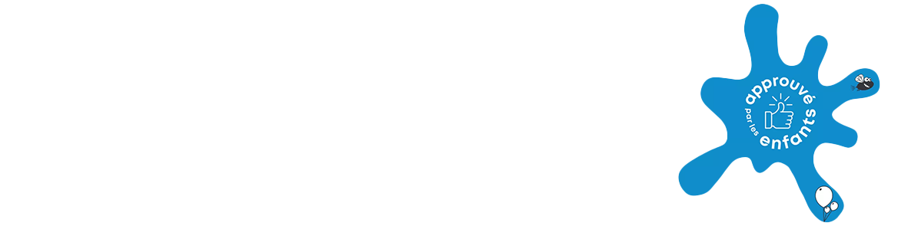

*Activiteit met reservatie
Het gedetailleerde programma verschijnt in de week van 23 november 2026. Houd het in de gaten en schrijf je in voor onze nieuwsbrief. schrijf je in voor onze nieuwsbrief.
Wat zijn de pluspunten voor jonge bezoekers?
Tarieven, toegang, openingstijden
Andere kindvriendelijke adressen in de buurt van het museum:

Onze rondleidingen zijn geschikt voor alle doelgroepen vanaf 4 jaar (inclusief leerlingen Nederlands, alfabetisering, personen met een verstandelijke beperking, psychisch kwetsbaarheid). Laat ons bij het boeken weten wat de specifieke behoeften van je groep zijn.
De gids zal je begeleiden op een reis van reflectie en genot van deze buitengewone werken, die de diversiteit van creatieve vormen onthullen en alle artistieke gebieden verkennen (schilderkunst, beeldhouwkunst, assemblage, collage, muziek, dans, enz.)
Dankzij het Art et marges museum kan uw kind een originele verjaardag beleven! Op een speelse en toffe manier de kunstwerken van het museum ontdekken, met creatieve workshops op het programma.